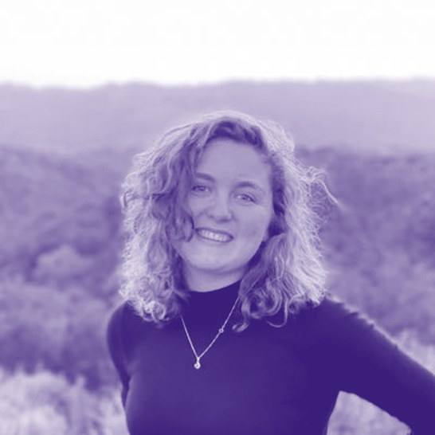
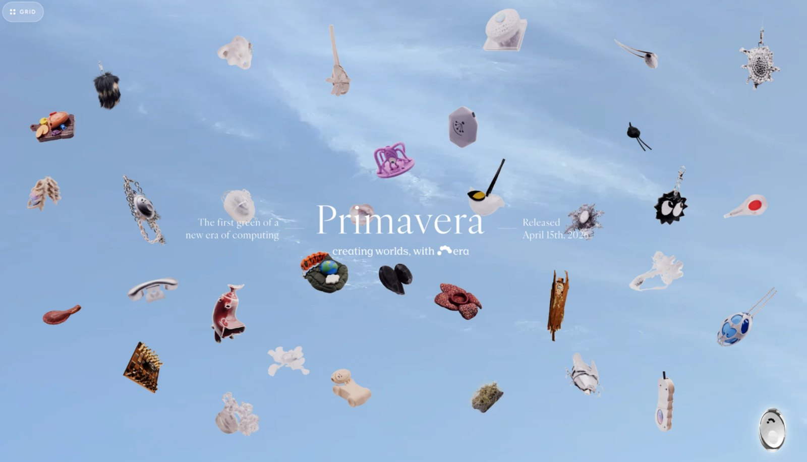
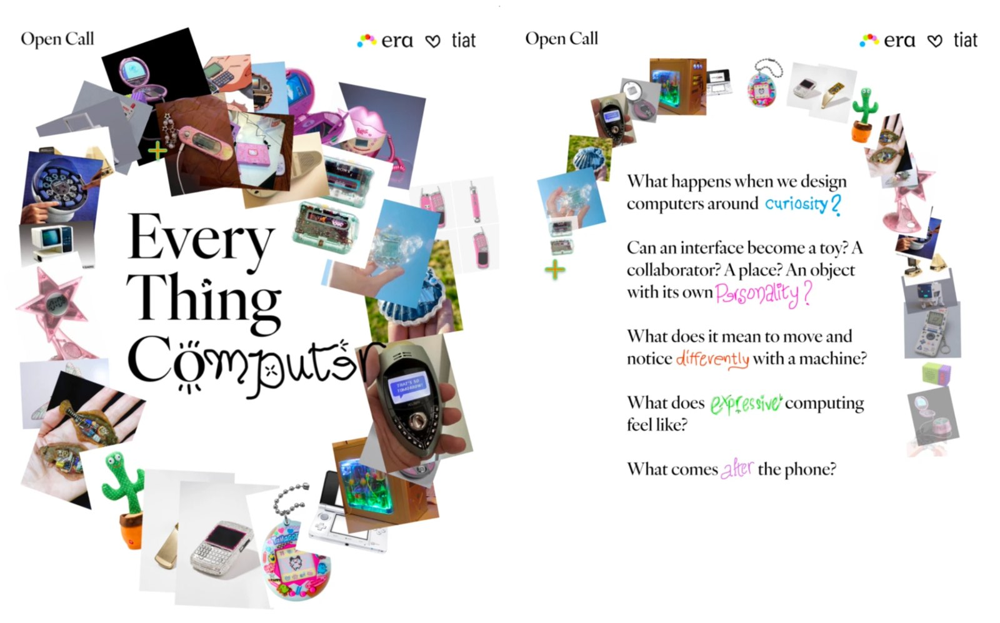
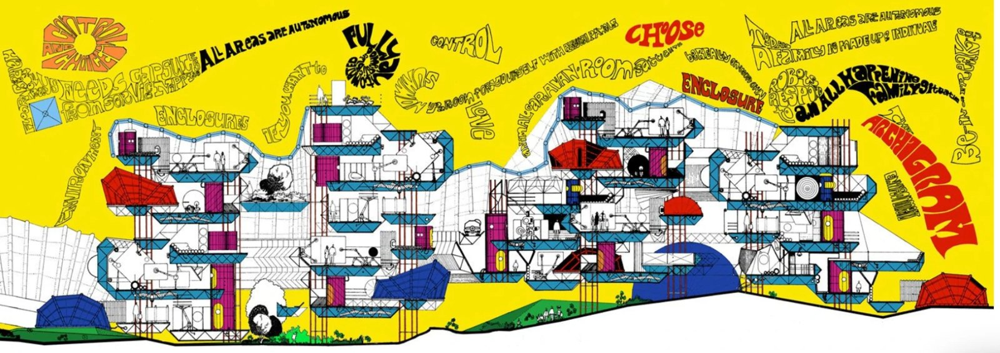

An interview with Liz Dorman, Co-founder of Era
Couture computing in hardware
Recorded September 2026 · Published October 2026
Liz Dorman owns more than a hundred old phones. There is a 1970s Bell telephone, a set of Barbie phones from the ’80s, Siemens handsets that were released in seasonal collections like clothing, and her prized piece: a hot pink Motorola Razr signed by Paris Hilton. To Dorman, the collection is evidence. Technology used to be weird, expressive, and fun, and she believes it can be again.
So she is building her own. Era, which she cofounded with Alex Ollman and Megan Gole and which raised $11 million earlier this year, makes the intelligence layer and hardware toolbox that let anyone, from brands to artists to people with no technical background at all, design their own AI devices. A speaker that talks like a British butler. A mirror that wants your gratitude before it hands over your toothbrush. A lamp you have to charm with poetry. Dorman calls it couture computing. In our conversation, we get into the physicists and the travel bug behind it, why she left big tech, why the next chapter of computing should look more like fashion than like a phone, and why Era asks job candidates to build something before they ever sit for an interview.
Who are you, what’s your story, and what’s the through line to how and why you started Era?
I’m Liz, a Jersey gal originally from Princeton, New Jersey. I grew up with immigrant parents from the Soviet Union. My whole family are physicists, four generations back. What they instilled in me is how you go so deep into a field that you build the underlying intellectual platform that allows other ideas to flourish. My grandpa discovered the underlying foundations for cosmic rays, and my great-grandpa discovered the foundations for superconductivity. Growing up with those inspirations, the question on my mind was: what is my platform, what is my infrastructure?
My dad was also an electrical engineer, and I grew up 3D printing stuff, tinkering, making my own contraptions like drones, and going to maker fairs. In elementary school, I went through all of Codecademy and taught myself to code. My family prioritized traveling the world (one life goal is going to all the countries in the world). I view technology as an incredible vehicle for curiosity and for connecting with the vastness of the world, and my dream was to be an inventor who made kooky gadgets that enabled us to be more in awe. I even tried making my own laser watch, I thought it was the coolest thing.
I love computing because it’s such a universal medium, and there are very few universal mediums. We have fashion, cars, architecture, and frankly the world is becoming more uniform and less diverse in all of them. In college I studied computer science and architecture at Princeton. Architecture is such a perfect metaphor for computing. We inhabit it every day, it influences how we think and connect, and it responds very quickly to the technological advancement enabling it.

In college, I got super interested in the most future-focused interfaces we could have, and I wanted to see how they actually get made real. I spent a year researching noninvasive BCIs, then cold-emailed the CTO of Apple, who, amazingly, was highly responsive. I ended up working on Vision Pro and future form factors for a year.
While I was at Apple, I heard about Humane, and I thought it was the most Rebel Alliance company that existed. There was this one image of everyone on their phones and one person standing up, and I thought, I don’t care what they’re doing, I must go work there. That’s the world I want to build towards. I cold-emailed my way in and ended up on the design team, and I learned so much there from some of the most thoughtful designers in the world. Humane saw the future years ahead of time, and tried doing too much, too early. But the ideas we brought forward, such as natural language device interaction on bespoke wearable devices, helped kick off a whole new industry.
As a Gen Z gal from the maker community, I always felt something was missing from the design processes at both Apple and Humane. Too often, the Apple way of making products meant building in hierarchical silos with incredible resources, out of touch with the “real world.” We’ll give you what’s best, we won’t ask for your input, and we’ll give you a toggle: option one or option two. There’s a reason devices come in two colors (black and white) with few pathways to customizing the software experience. There was no way for the consumer to author anything. Technology has felt like that for way too long, and it’s become boring because of it.
So Era is very much the opposite. I want it to be a living lab where people are actually invited to invent with us. The future of how we design technology should be more like fashion, where there’s so much diversity in ideas because you give people the tools and materials and they make them their own.
Era is a participatory personal computing company that believes people should author their own relationship with their technology. We build an intelligence layer and hardware toolbox that lets creators, brands, and everyday people design and personalize their own physical devices, starting with ambitious creative builders and expanding outward.
What that means is our design process is very different. We don’t work in silos. We conduct play-driven research, and we build with people. Too much tech acts as if it needs to have all the right answers about where the future is going and forces that onto people, instead of creating the space to understand what people actually will be empowered by. The only way to get there is to design the right infrastructure and events so people can build with you and explore things you would never think of.

Where is Era today? What have you prototyped and tested, and what have you learned?
We are making a platform that’s highly open and moldable. Internally, we talk about it as making our own Play-Doh: software and hardware toolboxes that let anyone make intelligent objects. We distilled the future of AI computing into a few core primitives, everything from orchestration to connecting agents to customizing voices. It doesn’t have to be a general assistant. This intelligence layer can be seen as the Android for the age of ambient objects.
A few months ago we gave a minimal-viable AI device (a small button, mic, and speaker holdable) to 30 of our favorite creative friends. They made a cornucopia of devices for a collection we call Primavera. All look and act different. Some are more practical creative assistants, others wellness-oriented devices, and others conceptual art pieces. We learned so much — but mainly that creatives should be shaping the conversation about where technology like AI is headed, and given the tools they have a lot to say. We are merely the invisible toolbox, and I can’t wait for us as a team to continuously learn from all the creation and thinking via making that we continuously enable more and more of.
I care so much about Era creating spaces for people from all backgrounds to make this future world of computing together. More short term, we are collabing on a show with our friends at TIAT in October–November exploring the future of playful personal computers — come by!

What do you mean by ambient objects?
Ambient objects are devices with intelligence that blend into your life and into the objects you use every day. When you’re not using them, you shouldn’t even notice them. They’re just there, helping you in the ways you want to be empowered.
We’re finally at a point where a few trends are catching up. Agentic systems are becoming so good that we’re moving to a post-app ecosystem, and agents are built on very open protocols, so there’s no set gatekeeper (as much as the incumbents will try to be). People are getting used to natural interfaces, and manufacturing physical devices is becoming so much more approachable.
The future we are building towards at Era is extremely exciting! We believe that the same way you can vibe code your own website, you should be able to vibe make your own consumer electronics. You say, I want this device that encourages me to be outside more and listen to more music and looks like a cool star, and it gets printed and CNC’d using pre-certified boards and components, and then shipped directly to your door.
To push back a little, why hardware to enable this malleability in experience? Why not build a personal software app that enables all of this on an iPhone?
Smartphones as a form factor have become too saturated and overbearing in our lives. There’s a reason so many people are into single-use devices such as digicams. It’s nostalgic, but it’s also this notion of control and getting back agency. We want main character energy back. The reason we loved our phones in the 2010s was that they felt so expansive and expressive — I was looking at jailbreak tweaks all the time, downloading crazy apps in the App Store, changing the backgrounds, and it felt so me. I would be so proud showing my friends how I styled my device, the same way we style our clothing.
But over time we’ve all consolidated on the same five apps, and those apps aren’t even working in our favor anymore. When I go on Instagram, I feel sucked in, rather than feeling that I have the ability to curate a space I like. In a world of algorithms and too many agents, I want my human agency back!
My parents are Soviet, and Soviet Russia did not have much. There weren’t many options, but if you were fashionable and expressive, you had your little moments: cool earrings, or a scarf you made yourself. We see this in tech too. The current substrate is very boring and dull, and people tie little bows on it with custom icons and backgrounds as their little moments. Highly customizable personal devices is where that opening is.
Meta’s glasses come in many colors, but they’re completely unauthorable and not stylable. The Humane Pin, very similar. The most fun I ever had with the Humane Pin, and when I used it most, was when I made it speak like Gossip Girl behind the scenes. All of a sudden it felt like my device. It’s not even that I love Gossip Girl. It’s, wow, I can change it, I can make it my own.
I also don’t believe in a world with one core form factor. Glasses, rings, bag charms, necklaces, home speakers will all coexist the same way accessories and jewelry coexist. Who are we to say what people will choose to use?
We aim to create a world of couture computing where these devices don’t need to be made by us, and other hardware companies can exist with much more curated, designed experiences they share with their audiences. I think we will see dozens of computing device companies, all happily co-existing.

At Era, we say we’re an experience-led company. We’re not design-led, because that creates an artificial division between design and everyone else. In the world of AI, engineers have a pulse on what’s possible from an experience standpoint, so we hire engineers who are very product-brained, conceptual, and thoughtful about technology.
On the design team, we have a few archetypes. One is the UI/UX design engineer who aims to perfect every animation. Another is the brand and design language thinker. Another goes deep on the AI system: someone who can listen to something and say, the memory does not sound right, let me go sit down with the memory engineer. And then there are object thinkers, which is what makes design culture at Era unique. They’re like the concept car teams at auto companies. Their goal is to imagine the future and go make devices. We hire generalists who can think through all of these but are very spiky in one.
What sources have influenced your taste and philosophy?
I’m a big sucker for architecture. I particularly love Archigram and the Metabolists, avant-garde groups in the UK and Japan that imagined buildings as organisms: modular buildings that change and rotate based on the needs of the inhabitants, so you’d come back and the building would look different. Era is very much inspired by them. Things will constantly change, and we’re merely building the core modular blocks that let people change it for their needs.

What brand do you most admire?
I love Apple back in the ’80s. It was very Rebel Alliance, anti-IBM: computers should be personal. No big brother. All Apple was telling people was that you can empower yourself by having your own beautifully designed computer and making your own applications on it, which is a beautiful idea.
I like places that are very open and inviting to participation and play, which is so missing in the tech scene right now. I really love Lego. It’s an incredible brand that enables so much creativity, at all scales. A24 as well. It’s very high-craft but also a platform for incredible work that just wouldn’t happen in the existing systems.